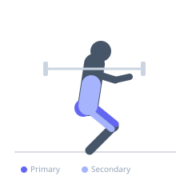

Exercise guide / Pause Squat
Pause Squat
The pause squat is a barbell back squat variation where the lifter pauses motionless at the bottom of the movement for a prescribed duration, typically two to five seconds, before driving back to the top. The pause eliminates the stretch-shortening reflex that assists normal squatting, forcing the muscles to generate force from a dead stop. This builds positional strength, reinforces technique, and identifies mobility or stability weaknesses.
Primary muscles
rectus femoris
vastus lateralis
vastus medialis
vastus intermedius
gluteus maximus
Secondary muscles
biceps femoris long head
erector spinae
Stabilizers
transverse abdominis
internal oblique
Equipment
Standard Barbell
Power Rack (Squat Cage)


Starting position
- Same setup as a standard barbell back squat: bar on upper traps, feet shoulder-width apart, toes pointed slightly outward.
Setup
- Set up identically to a back squat. Use 70–85% of your normal squat working weight for 2-second pauses. Reduce weight further for longer pauses.
Steps
- Step 1: Unrack the bar and set up as for a back squat. Take a deep breath and brace.
- Step 2: Descend under control to full depth — hips at or below parallel.
- Step 3: Hold the bottom position completely still for the prescribed time (2–5 seconds). Do not relax. Actively maintain tension throughout: knees out, chest up, core braced.
- Step 4: Without any counter-movement, drive explosively through the floor to return to standing.
- Step 5: Exhale at the top, reset, and repeat.
Coaching cues
- Stay tight during the pause — don't let anything relax
- Drive the knees out actively while holding the bottom
- Explode up — don't grind up slowly
Breathing
- Inhale and brace before descent. Hold breath through the pause and ascent. Exhale at the top.
Range of motion
- Full depth (hips at or below parallel). The pause must be at the deepest position, not above parallel.
Tempo
- 3-3-X-0 (3s descent, 3s pause, explosive ascent)
Common mistakes
- Relaxing the core, knees, or torso position during the pause
- Rising onto the toes at the bottom
- Using too much weight, which turns the pause into a brief wobble
Safety
- Use safety bars — a failed pause squat has less momentum to rescue than a normal squat
- Reduce load by 15–25% compared to your regular squat weight
Training
- strength: 2–5 reps
- hypertrophy: 4–8 reps
- endurance: 8–12 reps
- strength: 3–6 sets
- hypertrophy: 3–5 sets
- endurance: 2–4 sets
- Rest: {'strength': 240, 'hypertrophy': 120, 'endurance': 90}